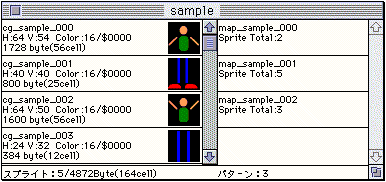
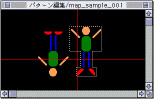
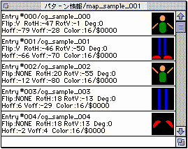
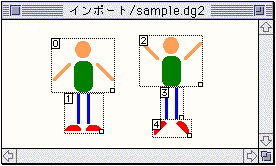
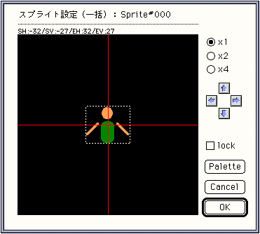
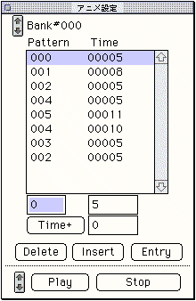

★Graphic Tools Guide
★SpriteEditorユーザーズマニュアル
★Graphic Tools Guide
★SpriteEditorユーザーズマニュアル
▲
戻る｜
進む▼
SpriteEditorユーザーズマニュアル
3.各ウィンドウについて
●メインウィンドウ
- 既に登録されているスプライト及びパターンの情報リストを表示します。
主に編集用のスプライト、パターンの選択用に使われます。

●パターン編集ウィンドウ
- スプライトの配置等の編集を行うためのウィンドウです。
メィンウィンドウ上でパターンが選択される都度に該当するパターンに表示が切り替わります。

●パターン情報ウィンドウ
- パターンに登録されたスプライト毎にオフセット座標、反転状態、回転中心点座標、回転角度等の情報を表示します。
また登録順序（＝表示プライオリティ）の変更や回転中心設定機能の呼び出しはこのウィンドウ上で操作します。

●インポートウィンドウ
- グラフィックデータからスプライトを切り出すためのウィンドウです。

●スプライト設定ダイアログ（一括／個別）
- ンドウのスプライト項目（一括）もしくはパターン情報ウィンドウのスプライト項目（個別）をダブルクリックすることによって表示されます。
回転スプライトのための中心点の移動及びパレットアドレスの変更を行います。

●アニメ設定ウィンドウ
- パターンを使ってアニメーション用のデータを作成するためのウィンドウです。ターゲット未接続時は表示されません。

▲
戻る｜
進む▼
★Graphic Tools Guide
★SpriteEditorユーザーズマニュアル
Copyright SEGA ENTERPRISES, LTD,. 1997